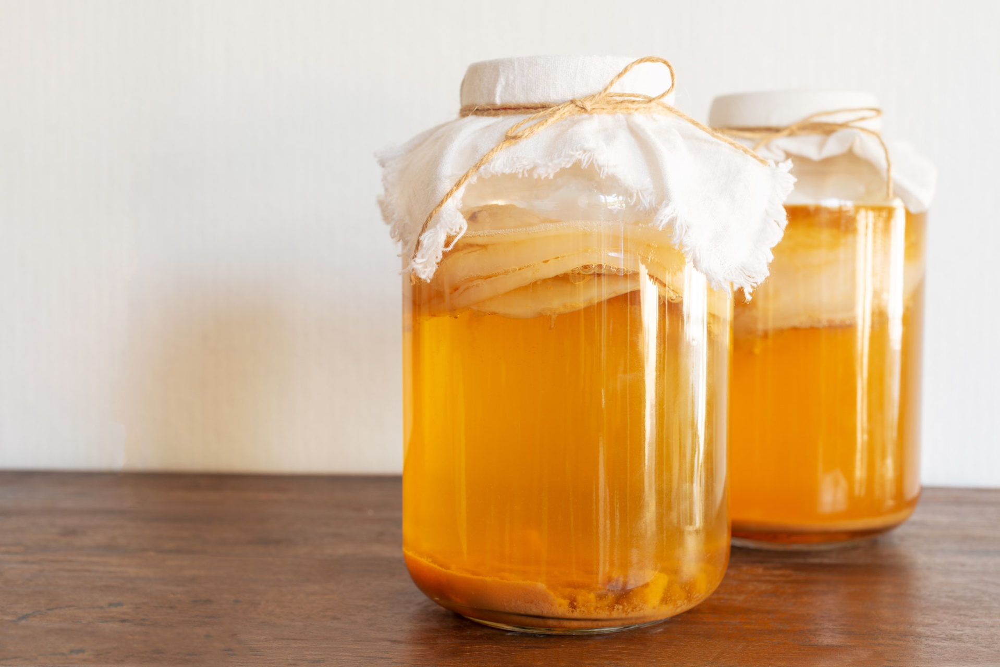

Kombucha chính xác là gì nhỉ?
Kombucha có phải một loại rượu không

Trẻ em có uống được kombucha không?
Liệu kombucha có thực sự tốt cho hệ đường ruột?

SCOBY là gì và tôi có thể mua ở đâu

Thời gian ủ kombucha mất bao lâu?

Có thể dùng trà có vị được không?

Nhiệt độ lý tưởng để ủ kombucha là?

Làm sao để biết kombucha đã hoàn thành

Để ủ kombucha tôi nên dùng loại trà nào

Tôi có thể dùng mật ong hoặc chất tạo ngọt thay cho đường được không?

Loại nước nào phù hợp nhất để ủ kombucha?

Tôi có nên dùng nguyên liệu hữu cơ không?
Tôi có thể cho hoa quả hoặc hương liệu vào trong quá trình ủ không?

Tạo hương vị cho kombucha